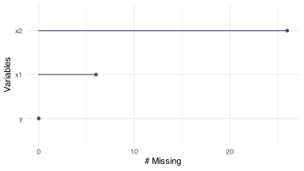
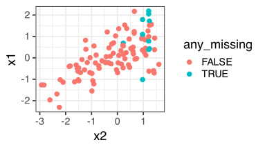

[1] NAMissing Data II
DSCI 200
Katie Burak, Gabriela V. Cohen Freue
Last modified – 09 February 2026
\[ \DeclareMathOperator*{\argmin}{argmin} \DeclareMathOperator*{\argmax}{argmax} \DeclareMathOperator*{\minimize}{minimize} \DeclareMathOperator*{\maximize}{maximize} \DeclareMathOperator*{\find}{find} \DeclareMathOperator{\st}{subject\,\,to} \newcommand{\E}{E} \newcommand{\Expect}[1]{\E\left[ #1 \right]} \newcommand{\Var}[1]{\mathrm{Var}\left[ #1 \right]} \newcommand{\Cov}[2]{\mathrm{Cov}\left[#1,\ #2\right]} \newcommand{\given}{\ \vert\ } \newcommand{\X}{\mathbf{X}} \newcommand{\x}{\mathbf{x}} \newcommand{\y}{\mathbf{y}} \newcommand{\P}{\mathcal{P}} \newcommand{\R}{\mathbb{R}} \newcommand{\norm}[1]{\left\lVert #1 \right\rVert} \newcommand{\snorm}[1]{\lVert #1 \rVert} \newcommand{\tr}[1]{\mbox{tr}(#1)} \newcommand{\brt}{\widehat{\beta}^R_{s}} \newcommand{\brl}{\widehat{\beta}^R_{\lambda}} \newcommand{\bls}{\widehat{\beta}_{ols}} \newcommand{\blt}{\widehat{\beta}^L_{s}} \newcommand{\bll}{\widehat{\beta}^L_{\lambda}} \newcommand{\U}{\mathbf{U}} \newcommand{\D}{\mathbf{D}} \newcommand{\V}{\mathbf{V}} \]
Attribution
This material is based on content from the following sources:
- Chapter 4 of Advanced modeling and data challenges (Vol.3)
- The Missing Book
- *Flexible Imputation of Missing Data
Learning Objectives
By the end of this lesson, you will be able to:
- Determine potential reasons why data are missing.
- Detect instances of missing observations in a data set using a computer script and visualization.
- Justify and apply strategies for managing the missing data.
- Write a computer script to impute missing values when appropriate
- Write a computer script to evaluate the impact that missing data can have on subsequent analyses through simulation.
- Reflect on the consequences with regards to the conclusions of the chosen method.
- Recognize the importance of utilizing domain knowledge when handling missing data.
Review
Last class we introduced the problem of missing data and learned that
missing data can reduce the sample size if only complete-cases are considered
missing data can distort who is represented and how variables are related if not handled appropiately
different missing data mechanisms need to be addressed differently
diagnosing visualizations and summary statistics are critical tools for making assumptions about missingness mechanisms
naniarpackage provides useful R functions which nicely integrate into the tidyverse workflow
Review
Last class we introduced the problem of missing data and learned that
missing data can reduce the sample size if only complete-cases are considered
missing data can distort who is represented and how variables are related if not handled appropiately
different missing data mechanisms need to be addressed differently
diagnosing visualizations and summary statistics are critical tools for making assumptions about missingness mechanisms
naniarpackage provides useful R functions which nicely integrate into the tidyverse workflow
Today, we’ll focus on how to analyze data with missing values
Missing values in R
Missingness can appear in different ways:
NANaNNULL99, 9999, 888, or a similar out-of-range number
“Missing”, “Unknown” or another character string
“” empty cell, or ” ” blank space
Although all correspond to missing information, each have different effects on subsequent analyses.
You can convert these to NA at import or data wrangling stages
Missing missing values
If you fail to account for missing values, some functions will return NA. For example,
The base R function na.omit() or the tidyr function drop_na() remove rows from data with any missing values
The boolean argument na.rm can be used in many functions to handle missing values
Analysis with missing data
Simulating data with missing values
The simulated data
Adding missingness at random (MAR)
Identifying and quantifying
[1] 10.66667[1] 26# A tibble: 3 × 3
variable n_miss pct_miss
<chr> <int> <num>
1 x2 26 26
2 x1 6 6
3 y 0 0A quick visualization
We can see the amount of missingness for each variable, but this summary does not show whether missing values occur together in the same observations.
Joint missigness


Missing Mechanism?

The plot suggests that data is not missing completely at random! but …
iClicker 1: can we rule out MNAR?
A. We can’t rule out MNAR
B. The plot suggests MAR and thus we rule out MNAR
C. We can rule out MAR
D. We can’t rule out MCAR
MAR vs MNAR
Because x1 and x2 are correlated, the missingness can appear to be related to x1. However, the missingness mechanism depends on the value of x2 itself, which makes it MNAR.
Caution
Visualizations can help rule out MCAR, but they cannot reliably distinguish MAR from MNAR.
When variables are correlated, an MNAR mechanism may look like MAR in plots.
CUTOFF FOR MIDTERM!
Imputation
Can we complete missing data?
Imputation is not always the solution to missing data
Imputation can reinforce existing biases.
- For example, imputing variables like, age, race, gender may introduce biases to the analysis, particularly if missingness is related to social factors.
In other cases, imputation may mask trends in the data over time.
The percentage of missing data matters: less than 5% is generally considered safe to impute; 5%–20% is often acceptable but requires careful diagnostics; 20%–40% calls for caution; and more than 40% are typically unreliable.
When missing data cannot be recovered, it is important to understand why the data are missing and to analyze them accordingly.
Types of imputation
- Listwise Deletion: retain only complete observations
- Simple and widely used
- Unbiased under MCAR
- Biased under MAR in many cases
- Inefficient (larger standard errors due to smaller sample size)
- Discards potentially useful data
- Deterministic Methods: Mean, Median, Mode Imputation
- Replaces missing values with the mean, median, or mode of the observed data
- Simple and fast to apply
- Reduces variance
- Introduces bias in relationships among variables
- Ignores imputation uncertainty

- Deterministic Methods: Statistical Prediction Models
- Replaces missing values with predictions from an estimated model (e.g., linear regression) using observed values of other variables.
- Preserves relationships between variables
- Assumes relationships that may not be valid
- Ignores imputation uncertainty.
Multiple imputation (MI)

Figure from *Flexible Imputation of Missing Data
MI
Assumes that missing data is either Missing Completely at Random (MCAR) or Missing at Random (MAR).
Reflects the uncertainty inherent in the missing data by introducing many randomly imputed values.
Gives unbiased parameter estimates
Retain the statistical relationships present in the data
MICE: Multivariate Imputation via Chained Equations
Initialization: Replace missing values with simple initial guesses (e.g., mean or median of observed values).
Imputation: For each variable with missing values, impute it using the other variables as predictors, based on a specified method (e.g., PMM, regression, tree-based methods), including random variation.
Iteration (maxit): Cycle through all variables multiple times to update the imputations.
Multiple Imputations: Repeat to create m complete datasets.
library(mice)
mice_imp <- simulated_data %>%
mice(m = 5, maxit = 10, seed = 123, printFlag = FALSE)
#one dataset
comp_case <- complete(mice_imp, action = 1)
model_mice1 <- lm(y ~ x1 + x2, data = comp_case)
answer14 <- summary(model_mice1)
answer14
Call:
lm(formula = y ~ x1 + x2, data = comp_case)
Residuals:
Min 1Q Median 3Q Max
-2.031 -0.769 -0.219 0.771 3.842
Coefficients:
Estimate Std. Error t value Pr(>|t|)
(Intercept) 0.2910 0.1193 2.439 0.0165 *
x1 2.0251 0.1688 11.999 <2e-16 ***
x2 1.5405 0.1354 11.376 <2e-16 ***
---
Signif. codes: 0 '***' 0.001 '**' 0.01 '*' 0.05 '.' 0.1 ' ' 1
Residual standard error: 1.155 on 97 degrees of freedom
Multiple R-squared: 0.8915, Adjusted R-squared: 0.8893
F-statistic: 398.6 on 2 and 97 DF, p-value: < 2.2e-16Visualizing imputation
Key Takeaways
Missing data do more than reduce sample size, they can distort who is represented and how variables are related
Diagnosing why data are missing is essential before choosing how to handle them
Complete-case analysis is a simple way to handle missingness but is unbiased only under MCAR and often fails otherwise
MNAR poses the greatest risk of bias when handled incorrectly
Visualization and diagnostics are critical tools for identifying missingness mechanisms
naniarintegrates missing-data summaries and visualizations into the tidyverse workflow using tidy data principles
Many imputation methods exist but it is important to understand the risk of imputing!
Transparent reporting of imputation decisions is essential for reproducibility and ethical integrity.
Check additional functions in the Missing Book

UBC DSCI 200